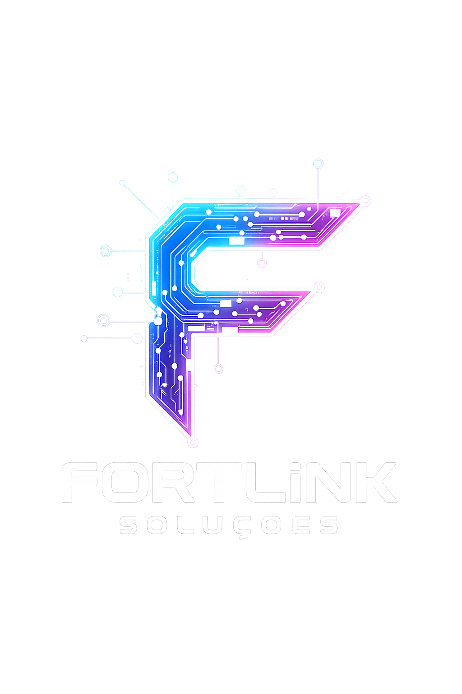

Infraestrutura de Redes
Planejamento, implantação e gerenciamento completo da infraestrutura de rede da sua empresa.

Operação sempre conectada
Projetos, suporte e monitoramento para ambientes de TI que precisam performar com segurança.
Serviços
Planejamento, implantação e gerenciamento completo da infraestrutura de rede da sua empresa.
Organização profissional do cabeamento estruturado com documentação completa e ambiente otimizado.
Atendimento rápido e especializado para resolver problemas sem interromper sua operação.
Implantação de ambientes corporativos com energia, refrigeração, cabeamento e segurança física.
Sistemas modernos de monitoramento com acesso remoto e gravação local ou em nuvem.
Comunicação corporativa moderna integrando voz, vídeo e dados com redução de custos.
Proteção avançada da rede com VPN, controle de acesso e políticas personalizadas.
Monitoramento contínuo da infraestrutura para identificar falhas antes de impactar sua empresa.
Análise técnica e otimização da cobertura sem fio eliminando pontos cegos da rede.
Por que escolher a FortLink Soluções?
Criamos soluções personalizadas para cada necessidade tecnológica da sua empresa.
Profissionais certificados com experiência em ambientes corporativos de todos os portes.
Monitoramento e atendimento para garantir que sua operação nunca pare.
Tecnologia de ponta com investimento planejado e retorno garantido.